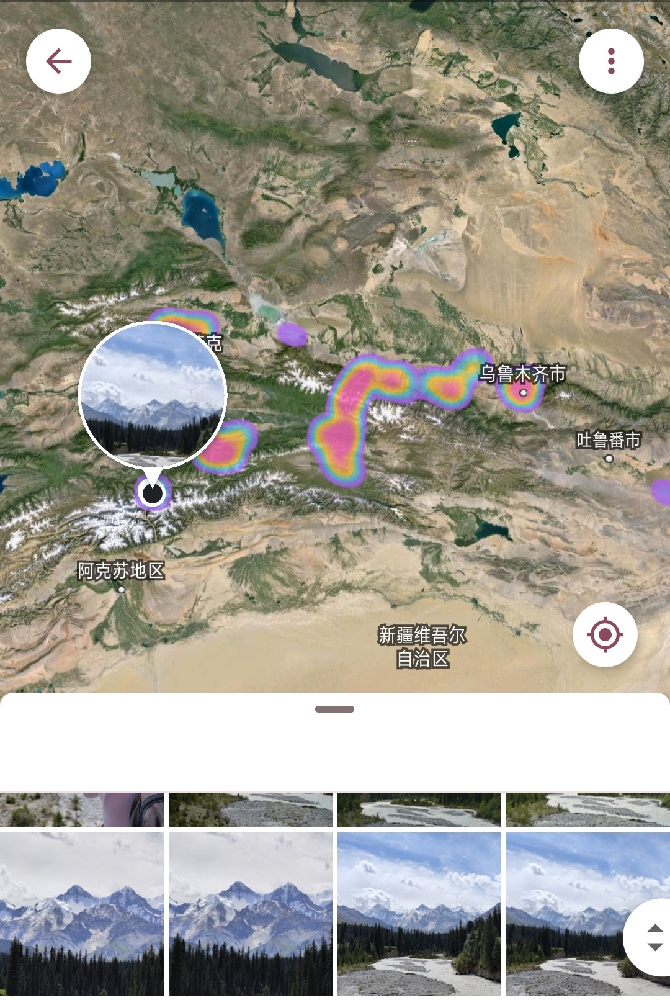
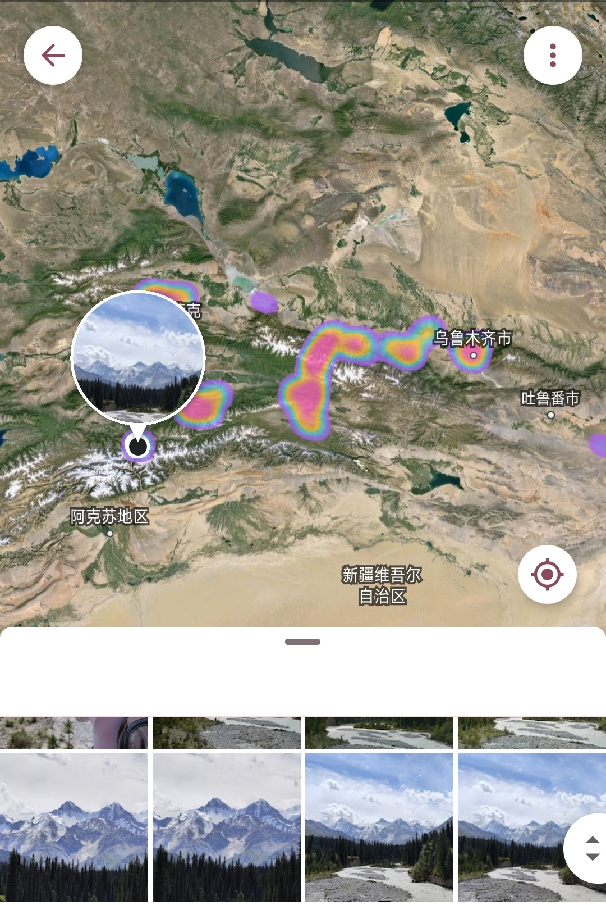
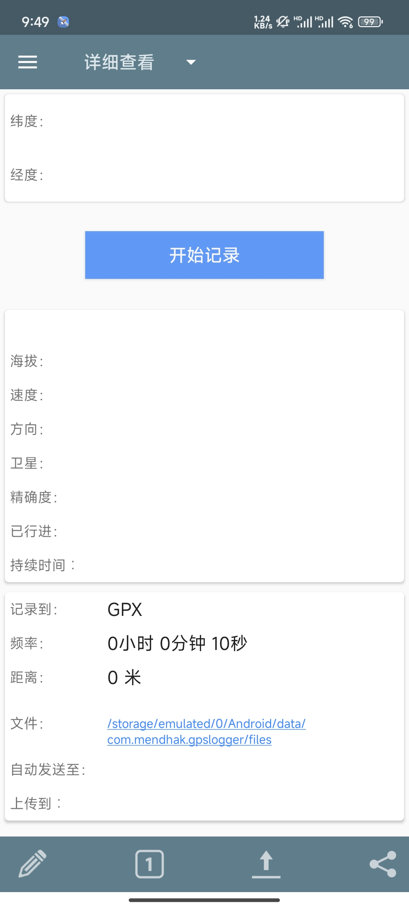
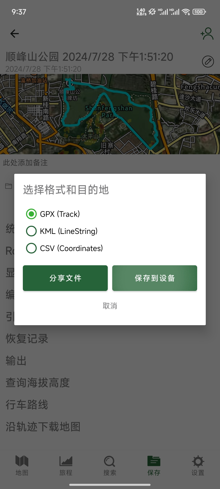
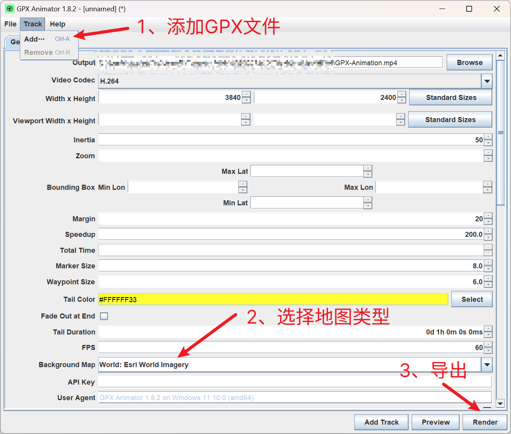

地图轨迹动画
近期准备走一趟川西环线，联想到谷歌根据照片位置生成的热力图，根据热力图的位置分布，可以大致推算出旅行路线，那么能否通过更加直接的手段记录出行路线呢？目前常用的高德地图能够生成导航过的轨迹，但是导航数据无法导出，定制化需求（如地图类型，时长、标识等）受限。
 

需求：
1、能够实时后台记录定位，定位信息可导出为通用格式（如GPX格式）；
2、根据定位文件生成轨迹图、轨迹动画。
工具
1、实时记录定位（安卓）：Gaia GPS、GPSLogger、六只脚、两步路等。无论安卓还是ios，只需能将定位信息导出为通用格式的文件即可。


2、轨迹绘制-网页版：GPX Studio、GPS Visualizer、GPX Viewer、GPX Replay


3、轨迹绘制-Win客户端：Route Generator、GPX Animator


操作示例
以下以安卓定位应用Gaia GPS和Windows可视化客户端GPX Animator为例。
1、导出定位记录为GPX文件 
2、GPX Animator导入GPX文件，选择地图后渲染导出。其他设置项可停留鼠标在输入框获取说明。部分地图可能需要特殊网络环境。 值得一提的是，GPX Animator可以自动将包含时间信息的照片插入到生成的视频中，但样式比较简陋。 
生成效果展示
GPX Animator（根据时间加速）

Route Generator（根据路程加速）